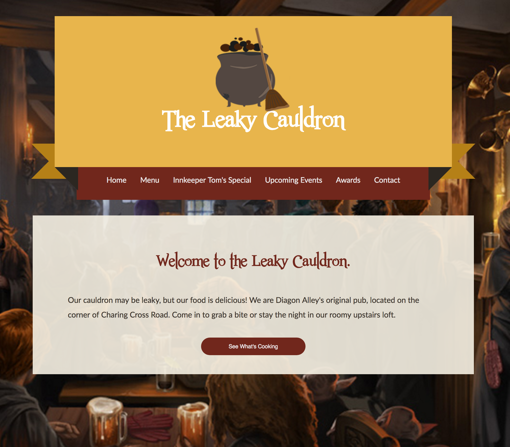
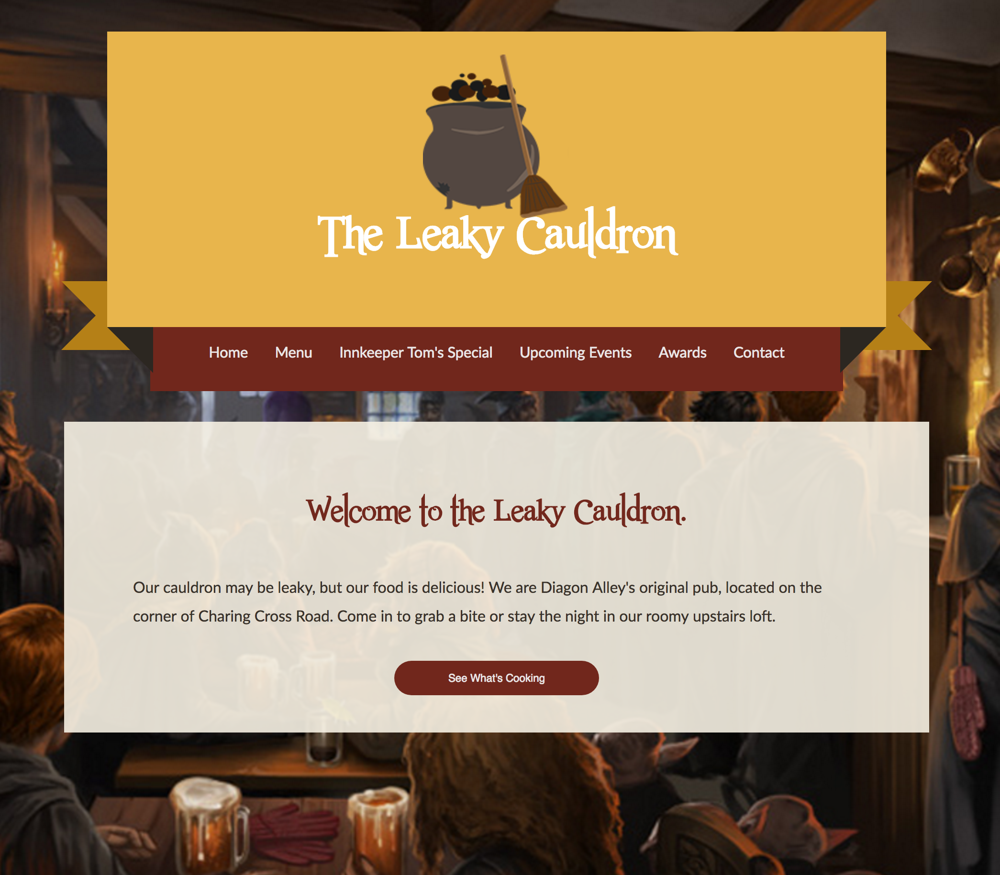

Web Design
- Mobile-first, responsive design
- Custom WordPress themes
- Strategic process plan including prototyping and version control
I’m a DIYer in the Digital Age. What does that mean, you ask? Good question! I believe that a great digital product is one that doesn’t cut corners. Being a digital DIYer means I can (and will) do it all - graphic design, web development and digital marketing - from scratch to help bring your vision to life.


 


"Quality is not an act, it is a habit." - Aristotle
I am a final-semester graduate student studying web design and online communication through the University of Florida's Master's in Mass Communication program. I have spent the last six years cultivating my knack for storytelling -- whether verbally through public relations campaigns, or visually with web and graphic design. I am passionate about delivering a quality, handmade product that effectively tells the story of your brand.
View my PortfolioUniversity of Florida
University of Florida